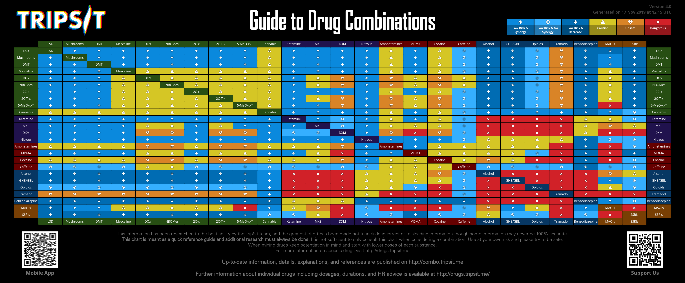
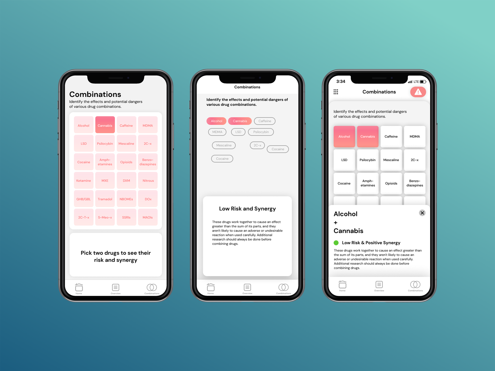

Sanctuary
UX/UI
Sanctuary is a group project where the goal was to create an app for festival goers to practice festival safety. After some user research, we decided our app should include three main features: a group functionality to locate friends at a festival, a learning section on safety regarding specific drugs, and a combination section, which allows users to check the safety of combining two drugs. My role in the group was to develop the combination feature.
Project Video
The current resource available for checking drug combinations exists in the form of an information chart. Although the chart has all the information needed, the issue is that it is an information overload. Instead of putting all the information on a static screen, I decided to take advantage of mobile interactions to hide and show information only when the user wants it. The interaction would occur as follows: The user selects two drugs they would like to learn about and a pop-up card would appear at the bottom of the screen to display the combination safety.
Existing Drug Combination Guide
With the workflow in mind, I used Figma to explore the possibilities of visually representing it. The team decided to use gradients and cards as the visual identity, so working under those constraints and to keep consistency, I created mockups of potential designs.
Mockups 1-3
In the end, I chose the third option because it best indicated which drugs were selected, and once two were selected, the pop-up card had the opportunity to be animated and would indicate clearer which two drugs were selected.

Final Screens